Contents
MyMainScript
clear;
Reading images
im1 = imread('../data/baboonColor.png');
im2 = imread('../data/bird.jpg');
im3 = imread('../data/flower.jpg');
image 1
rng(180050004);
im = im1;
hs = 3;
hr = 20;
resize = 1/2;
num_clusters = 10;
iter1 = 30;
[output1,shifting_points1,idx1] = myMeanShiftSegmentation(im,hs,hr,resize,num_clusters,iter1);
figure;
imshow(imresize(im,resize)); title('Original image');
figure;
x1 = shifting_points1(:,1:3);
x1 = reshape(x1,[size(output1,1),size(output1,2),3]);
imshow(mat2gray(x1)); title('mean shifted');
figure;
imshow(mat2gray(output1)); title('Centroid color labelling in segments');
figure;
idx1 = reshape(idx1,[size(output1,1),size(output1,2)]);
imshow(mat2gray(idx1)); title('segmented color labels');
65536 5
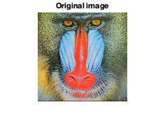 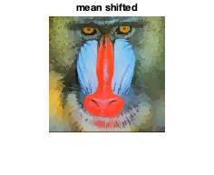 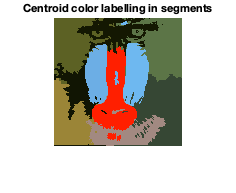 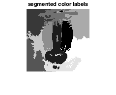
image 2
rng(180050004);
im = im2;
hs = 4;
hr = 60;
resize=1/2;
num_clusters = 20;
iter2 = 40;
[output2,shifting_points2,idx2] = myMeanShiftSegmentation(im,hs,hr,resize,num_clusters,iter2);
figure;
imshow(imresize(im,resize));title('Original image');
figure;
x2 = shifting_points2(:,1:3);
x2 = reshape(x2,[size(output2,1),size(output2,2),3]);
imshow(mat2gray(x2));title('mean shifted');
figure;
imshow(mat2gray(output2));title('Centroid color labelling in segments');
figure;
idx2 = reshape(idx2,[size(output2,1),size(output2,2)]);
imshow(mat2gray(idx2)); title('segmented color labels');
201300 5
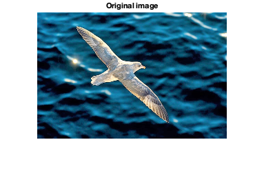 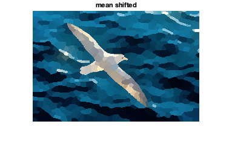 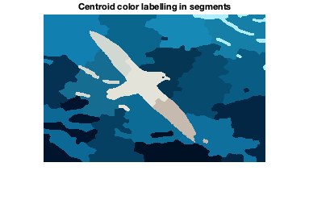 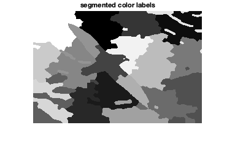
image 3
rng(180050109);
im = im3;
hs = 7;
hr = 36;
resize = 1;
num_clusters = 25;
iter3 = 40;
[output3,shifting_points3,idx3] = myMeanShiftSegmentation(im,hs,hr,resize,num_clusters,iter3);
figure;
imshow(imresize(im,resize)); title('Original image');
figure;
x3 = shifting_points3(:,1:3);
x3 = reshape(x3,[size(output3,1),size(output3,2),3]);
imshow(mat2gray(x3));title('mean shifted');
figure;
imshow(mat2gray(output3)); title('Centroid color labelling in segments');
figure;
idx3 = reshape(idx3,[size(output3,1),size(output3,2)]);
imshow(mat2gray(idx3)); title('segmented color labels');
120275 5
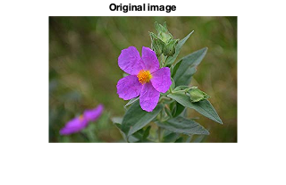 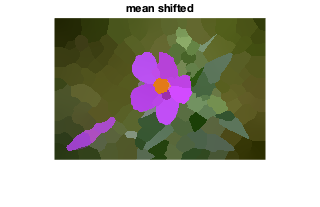 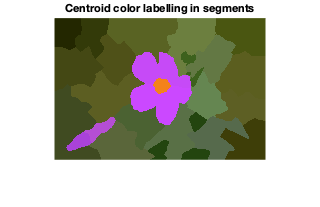 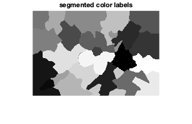